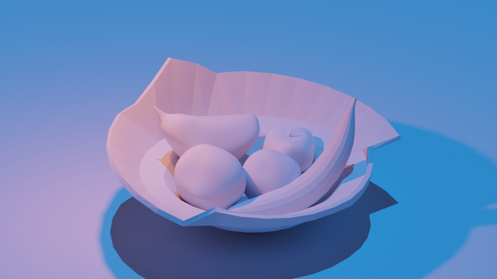

Hello viewer! Today I shall be discussing about my favourite
topic from DGA1020 which is 3D Art and Animation.
I learnt the fundamentals of the application called 'Blender'.
This helped me understand the basics on how to create 3D Art.
I learnt how to sculpt and create objects, how lighting works, rendering and
animating certain motion of the objects.
So, why did I enjoy this topic?
I will be showcasing a still image as well as the final animation
The still image:
The final animation: